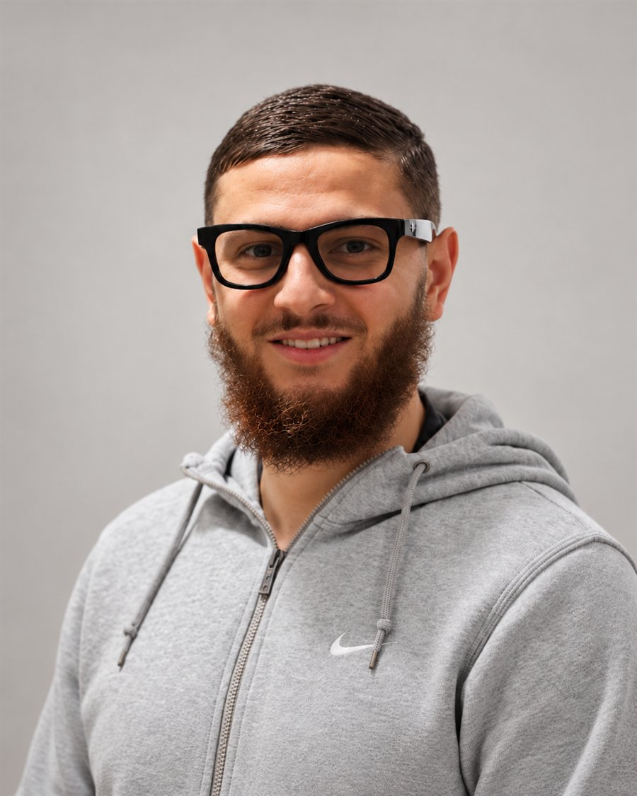

Bachelor Informatique & Cybersécurité · en alternance
Kamel
Belmoussa
Technicien systèmes, réseaux & cybersécurité, en alternance chez La Panière à Chambéry.

01 — À propos
Qui je suis
Après un BTS SIO option SISR, je poursuis en Bachelor Informatique & Cybersécurité à Ecoris Chambéry, toujours en alternance chez La Panière.
Depuis septembre 2024, j'interviens chaque jour sur le système d'information d'un réseau de magasins et de son siège : supervision du parc avec NinjaOne, support utilisateurs via Bob! Desk, gestion d'Active Directory et de Microsoft 365, et déploiements sur le terrain (baies réseau, switchs, caisses, vidéoprotection).
Cette année, je vais plus loin sur la sécurisation des infrastructures : durcissement des systèmes, segmentation réseau, gestion des accès et veille sur les menaces.
Mon objectif : évoluer vers un poste d'administrateur systèmes & réseaux orienté cybersécurité, capable de faire tourner une infrastructure fiable tout en accompagnant les utilisateurs.
- Localisation
- Aix-les-Bains (73)
Mobile Rhône-Alpes - Formation
- Bachelor Informatique & Cybersécurité · Ecoris
- Alternance
- La Panière
depuis septembre 2024 - Langues
- Français · Anglais B1 · Italien B1